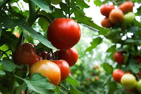

In terms of provision of food the market is able to provide food to almost whole of meru town
Tomatoes
Garlic
Rice

- The market is known for its diverse foods and also fresh produce.
- I would recommend anyone to visit the market for shopping and also starting bussines there
Places I want to avoid
- North pole
- I here this is cold!
- South pole
- This is also cold.
- Mountain Tops
- These are also cold.